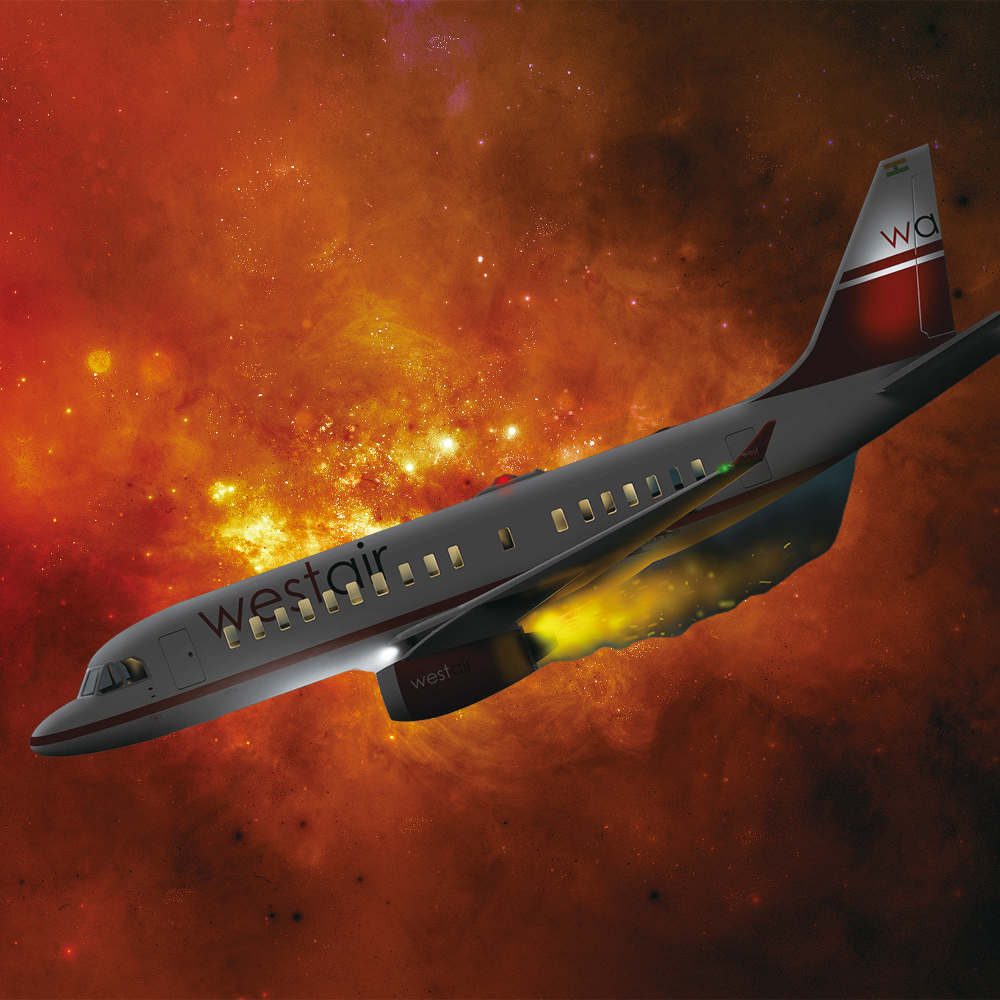

While the development of transport has allowed tourism to grow rapidly in the course of globalisation, the safety risks they pose are a necessary consideration when travelling.
The sinking of the Titanic in 1912
The Granville rail disaster in 1977

The Malaysia Airlines Flight 17 in 2014